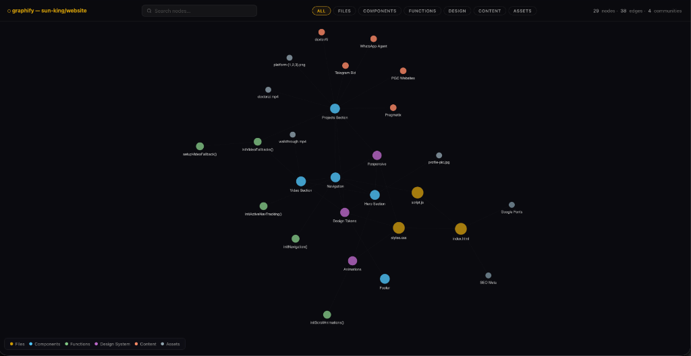

Associate Product Manager — Sun King Application
Hi, I'm Shikhar Gupta. I'm an AI-focused Product Manager with a foundation in data analytics and technical problem-solving.
I specialize in untangling complex 0-to-1 problems—moving beyond just building requested features to owning the entire problem lifecycle. Whether it's tearing down data silos, re-architecting CRM infrastructures, or building automated workflows, I focus on systems that align cross-functional teams and drive measurable business value.
Most recently at Eshopbox, I led data migrations, automated sales ops workflows, and shifted organizational incentives to align with true revenue health—reducing software costs by 60% and lowering sales cycle times by 80%.
I am driven by ambiguity resolution, and my goal is to combine product thinking with engineering execution to build scalable, intelligent systems.
CRM Redesign & Sales-Ops Transformation at Eshopbox
Video will be available shortly
A 4-minute walkthrough of how a routine bug fix turned into a company-wide systems redesign.
The project I walked through in my video — the CRM redesign and sales-ops transformation at Eshopbox — is work I'm genuinely proud of. However, since it was built on proprietary internal systems, I'm not able to share the project data, dashboards, or codebase publicly.
Instead, here are projects I've built over the past year that demonstrate the same principles — AI-first thinking, hands-on building, and end-to-end ownership:
A desktop-native AI development workbench that allows developers to run, compare, and orchestrate multiple models locally without cloud data leakage.
A mobile-first auction marketplace where field sales or users upload product images via Telegram, and an AI agent auto-generates optimized, context-aware product descriptions to start a bid.
A field-ready agentic system where non-technical stakeholders or agents text a WhatsApp group, tag specific specialized virtual numbers (“Workers”), and receive database queries and system lookups automatically.
A premium small-batch coaching institute in West Patel Nagar, New Delhi, serving Classes 6–12 across CBSE, ICSE, and IGCSE since 2009. I own growth and marketing strategy to drive leads and offline programme signups for this family business with 15+ years of continuous teaching.
Product management internship focused on validating a new B2C coaching vertical using AI-native tools — from market research to rapid UI prototyping, bypassing traditional engineering queues.
Saves compute & token costs by scanning any folder or repository and generating an interactive force-directed dependency graph. Maps files, components, functions, design tokens, and assets into a visual network — enabling AI agents to navigate codebases semantically without brute-force scanning.
graphify-out/ folder in this website’s own repository was generated using this tool.
A desktop-native AI workbench connecting 6 providers, 195 models — built end-to-end with AI coding tools.
Video will be available shortly
I approach product management with an AI-first mindset: I treat AI not as a generic productivity tool, but as a core architectural building block and a rapid prototyping sandbox. This website outlines my hands-on technical capabilities, project portfolio, and the conceptual frameworks I apply to design, build, and deploy intelligent, tech-enabled workflows.
For me, being an AI-first PM is defined by three active principles: